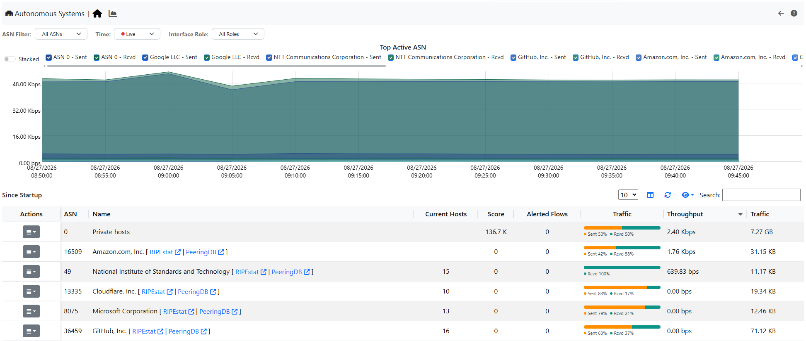
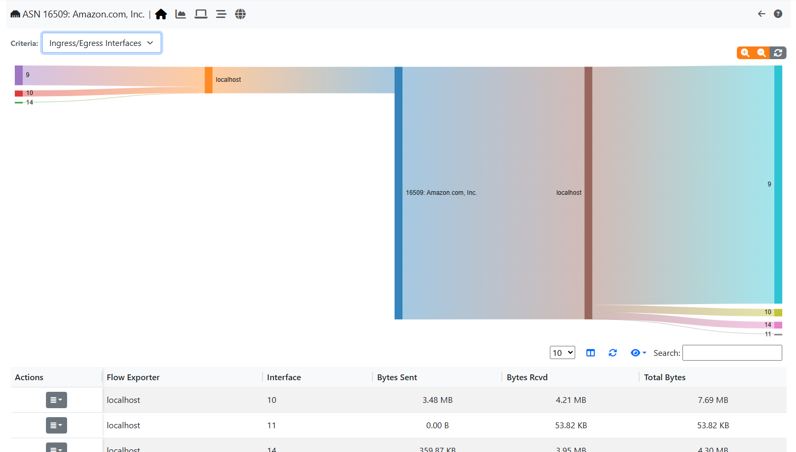

Автономные системы
Автономные системы отображают все автономные системы, обнаруженные ntopng. Автономные системы требуют Геолокация включено.

Страница сводной информации об автономных системах хостов
Ntopng использует базу данных Maxmind для сбора информации об автономных системах (АС) и на основе это группирует хосты, принадлежащие одной AS. AS номер 0 содержит все хосты, имеющие частные IP-адреса.
Можно сказать ntopng какие ASN ваши собственные, какие принадлежат вашим клиентам, а какие просто актуальны для вашего бизнеса: см. Конфигурация АСН для получения подробной информации о конфигурации.
На странице есть две вкладки: Обзор, с схемой топовых Автономных Систем и таблицей, и Исторические данные, с таймсериями автономной системы интерфейса. Исторические данные неактивен до тех пор, пока Автономная система временные ряды включены в Настройки > Предпочтения > Таймсерии.
Фильтры над диаграммой применяются как к диаграмме, так и к таблице:
Фильтр АСН: все ASN или только ваши ASN, ASN ваших клиентов, соответствующие удаленные ASN или другие. (см. Конфигурация АСН)
Время: Жить или прошлый диапазон времени (от 30 минут до прошлой недели). Отображается только тогда, когда ClickHouse включено
Роль интерфейса: трафик, видимый на IX, пиринговых или транзитных интерфейсах SNMP. Требуется предприятие М
Очистить фильтры возвращает их все к значениям по умолчанию.
На диаграмме (когда временные ряды включены, лицензия Enterprise) показаны самые активные автономные системы с течением времени.
Когда Жить выбрано время (или когда ClickHouse недоступно), таблица под диаграммой помечается Активный ASN с момента запуска: сообщает о трафике каждой автономной системы, накопленном с момента запуска ntopng, и он не зависит от временного диапазона, выбранного для диаграммы. При наведении на метку отображается всплывающая подсказка с этим объяснением.
Это происходит потому, что историческая таблица автономных систем построена на основе данных, хранящихся в ClickHouse, а Таймсерии не требуют ClickHouse. Как следствие, без ClickHouse график можно переместить в любой временной диапазон, но в таблице всегда показаны данные, собранные с момента запуска ntopng.
Примечание
Когда ClickHouse включено, выберите Время значение, отличное от Жить для отображения исторической таблицы за выбранный период.
Имя каждой автономной системы ссылается на ее страницы RIPEstat и PeeringDB (в новой вкладке браузера). Значки рядом с именем отметьте свои ASN, ASN ваших клиентов и соответствующие удаленные ASN.
Кнопка Действия Колонка открывает хосты Автономной системы. В его меню также есть:
Потоки этой AS: текущие потоки или исторические потоки выбранного временного диапазона, когда Время не Жить
Таймсерии
Статистика входящего/исходящего трафика: только с потоками от экспортера nProbe, не для частных хостов (ASN 0)
Недоступные действия отображаются серым цветом с указанием причины (например, в прошедшем диапазоне времени может отображаться автономное действие). Система, у которой сейчас нет активных хостов: ее хосты и статистика входящего/исходящего трафика недоступны).
Таймсерии

Лучшие таймсерии ASN
Предупреждение
Чтобы иметь возможность видеть таймсерии, их необходимо включить в настройках (раздел «Таймсерии»).
Доступ к временным рядам автономных систем можно получить двумя разными способами:
При нажатии на кнопку Действие (кнопка) -> Таймсерии таким образом отображаются таймсерии выбранной AS;
Нажав на Исторические данные вкладка, таким образом отображаются все таймсерии AS выбранного Интерфейса;
Предупреждение
Если присутствует много автономных систем, загрузка всех таймсерий (второй вариант выше) может занять некоторое время.
Статистика входящего/исходящего трафика
Эта страница используется для понимания каждой AS, откуда она отправляет/получает трафик.

Взгляд на автономные системы
Есть два разных критерия:
AS Просмотр;
Входные/выходные интерфейсы;
В первом случае отображается статистика каждой AS, общающейся с другими AS. Здесь также показаны транзитные AS (например, ASN 174 взаимодействует с ASN 16509, используя ASN 6939 в качестве транзита). В таблице показаны те же данные, что и в sankey, но в виде таблицы (с возможностью сортировки и поиска).
Примечание
Таблица ниже доступна только для лицензии Enterprise L.

Взгляд на автономные системы
Вместо этого во втором представлении показано, из какого экспортера и интерфейса каждая AS отправляет/получает трафик.
Примечание
Второе представление доступно только в том случае, если существует хотя бы экспортер, отправляющий трафик в направлении ntopng (см. Использование ntopng с nProbe)
Хосты/Потоки
Все хосты или потоки, входящие в выбранную автономную систему, отображаются на соответствующей странице. Хозяева и Потоки страницы